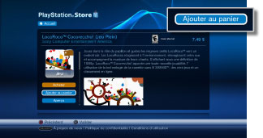
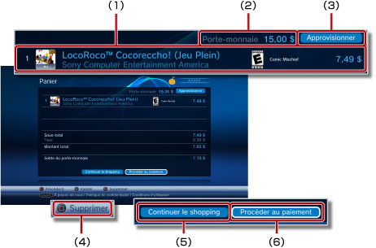
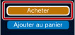
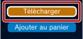
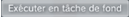
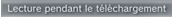
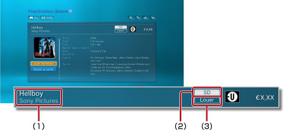

PlayStation®Network > Téléchargement (achat) de produits
Téléchargement (achat) de produits
Pour utiliser cette fonctionnalité, vous devrez peut-être mettre à jour le logiciel système.
Vous pouvez télécharger (gratuitement ou en payant) des produits, tels que des jeux, des suppléments pour jeux ou du contenu vidéo disponibles dans  (PlayStation®Store). Pour télécharger des produits (gratuitement ou en payant) à partir de (PlayStation®Store), vous devez créer un compte PlayStation®Network.
(PlayStation®Store). Pour télécharger des produits (gratuitement ou en payant) à partir de (PlayStation®Store), vous devez créer un compte PlayStation®Network.
1. |
Sélectionnez |
||||||||||||
|---|---|---|---|---|---|---|---|---|---|---|---|---|---|
2. |
Sélectionnez l'élément que vous souhaitez télécharger (gratuitement ou en payant) à partir de |
||||||||||||
3. |
Sélectionnez [Ajouter au panier].  |
||||||||||||
4. |
Sélectionnez [Voir panier] pour afficher l'écran suivant. 
|
||||||||||||
5. |
Sélectionnez [Procéder au paiement]. |
||||||||||||
6. |
Sélectionnez [Confirmer l'achat]. |
||||||||||||
7. |
Sélectionnez l'article à télécharger. |
Conseils
- Les produits disponibles dans (PlayStation®Store) varient en fonction du pays ou de la région. Remarquez que vous ne pouvez accéder qu'au (PlayStation®Store) du pays ou de la région de votre compte PlayStation®Network.
- Pour obtenir des informations sur les types de produits qui peuvent être téléchargés (gratuitement ou en payant) à partir de (PlayStation®Store) et sur les services après-vente, visitez le le site Web SCE de votre région.
- Si vous sélectionnez [Acheter] pour acheter un article à l'étape 3, vous pouvez ignorer la page du panier et accéder directement à l'écran de confirmation d'achat (étape 6). Si les informations relatives à votre carte bancaire sont enregistrées avec votre compte PlayStation®Network, le porte-monnaie est automatiquement approvisionné s’il ne contient plus assez de fonds pour effectuer l'achat.

- Si vous sélectionnez [Télécharger] pour télécharger un article gratuit (étape 3), vous pouvez ignorer la page du panier et accéder directement à l'écran de téléchargement (étape 7).

- Si l'ID de connexion (adresse e-mail) n'est pas correct (ou s'il s'agit d'une adresse e-mail non valide), le message de confirmation n'est pas reçu. Lorsque vous enregistrez votre ID de connexion, utilisez une adresse e-mail valide à laquelle vous pouvez recevoir des messages. Pour modifier l'ID de connexion, accédez à
 (PlayStation®Network), puis sélectionnez
(PlayStation®Network), puis sélectionnez  (Gestion du compte) >
(Gestion du compte) >  (Informations du compte) > [ID de connexion (adresse e-mail)]. Suivez les instructions affichées pour effectuer des révisions.
(Informations du compte) > [ID de connexion (adresse e-mail)]. Suivez les instructions affichées pour effectuer des révisions. - Certains contenus téléchargés (achetés) auprès de (PlayStation®Store) ne peuvent être utilisés que par des périphériques activés à partir du système PS3™, par exemple un autre système PS3™ ou un système PSP™. Pour activer ou désactiver un périphérique, sélectionnez (Gestion du compte) sous (PlayStation®Network), puis sélectionnez
 (Activation du système). Suivez les instructions affichées pour achever l'opération.
(Activation du système). Suivez les instructions affichées pour achever l'opération. - Lorsque

s'affiche à l'écran pendant un téléchargement, cela signifie que vous pouvez exécuter d'autres opérations au cours du téléchargement. Sélectionnez pour revenir à l'écran précédent pendant que le téléchargement se poursuit. Pour plus de détails, consultez (Réseau) >
(Réseau) >  (Gestion des téléchargements) > [Télécharger en tâche de fond] dans ce mode d'emploi.
(Gestion des téléchargements) > [Télécharger en tâche de fond] dans ce mode d'emploi. - Lorsque

s'affiche à l'écran pendant un téléchargement, cela signifie que la vidéo peut être lue alors qu'elle est téléchargée. Si vous sélectionnez , (PlayStation®Store) se referme et la lecture démarre.
Types de contenus disponibles dans la boutique vidéo
Deux types de contenus vidéo sont disponibles dans la boutique vidéo de PlayStation®Store. Vous pouvez télécharger (sous forme d'achat ou de location) des produits de la boutique vidéo de la même manière que des produits de la boutique de jeux de PlayStation®Store.

(1) |
Nom du contenu |
||||
|---|---|---|---|---|---|
(2) |
Résolution de la vidéo |
||||
(3) |
Indique si le contenu est destiné à l'achat ou à la location
|
Les limitations relatives à la durée de lecture, la période de téléchargement effective et les types de contenus susceptibles d'être téléchargés qui sont disponibles varient selon le pays ou la région d'accès à PlayStation®Store.
Conseils
- La boutique vidéo de PlayStation®Store n'est disponible que dans un nombre limité de pays et de régions. Les langues prises en charge sont également limitées et les types de services disponibles varient selon la région. Pour plus de détails, contactez la ligne d'assistance technique de votre région.
- Il se peut que le contenu acheté ou loué à partir de la boutique vidéo ne puisse être téléchargé qu'une seule fois pendant la période d'utilisation autorisée. Le retéléchargement du contenu n'est pas autorisé sans un autre achat.
- Vous ne pouvez télécharger ou afficher du contenu vidéo que si le système PS3™ est activé avec un compte PlayStation®Network. Vous ne pouvez activer qu'un seul système PS3™ avec un compte de contenu vidéo. Dans la plupart des cas, le système est activé automatiquement lors du téléchargement du contenu.
- Si un autre (deuxième) système PS3™ est activé avec le compte PlayStation®Network que vous souhaitez utiliser, vous devez d'abord désactiver cet autre système à partir du compte avant de pouvoir télécharger le contenu vidéo. Pour désactiver un système PS3™, sélectionnez (Gestion du compte) sous (PlayStation®Network), puis sélectionnez (Activation du système). Suivez les instructions affichées pour achever l'opération.
- Pour obtenir de l'aide sur la désactivation d'un système PS3™, contactez la ligne d'assistance technique de votre région.